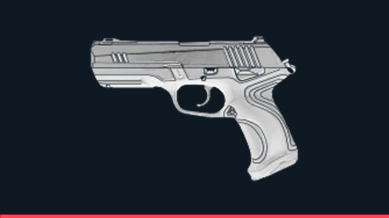
Classic (Arma Leve)
Custo: Gratuita | Dano Cabeça: 78 | Corpo: 26 | Pistola padrão com disparo secundário de rajada para curta distância.
Gerenciar os créditos da equipe a cada rodada é fundamental para garantir rifles principais, escudos e todas as habilidades nos momentos decisivos.

Custo: Gratuita | Dano Cabeça: 78 | Corpo: 26 | Pistola padrão com disparo secundário de rajada para curta distância.
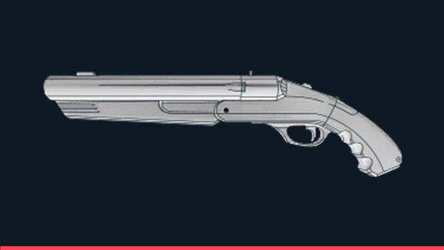
Custo: 300 Créditos | Dano Pelota: 22 (Cabeça) | Escopeta de cano serrado de dois tiros letal em cantos fechados.
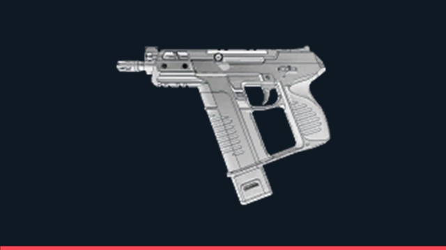
Custo: 450 Créditos | Dano Cabeça: 78 | Corpo: 26 | Pistola automática ideal para avanços rápidos no Pistol Round.
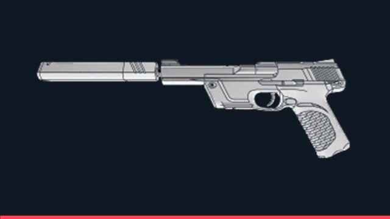
Custo: 500 Créditos | Dano Cabeça: 105 | Corpo: 30 | Pistola silenciada de alta precisão capaz de abater inimigos sem escudo com 1 tiro na cabeça.
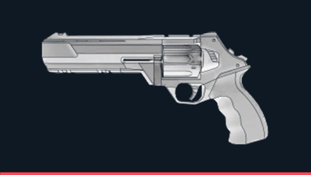
Custo: 800 Créditos | Dano Cabeça: 159 | Corpo: 55 | Revólver pesado muito utilizado em rodadas econômicas (Eco).
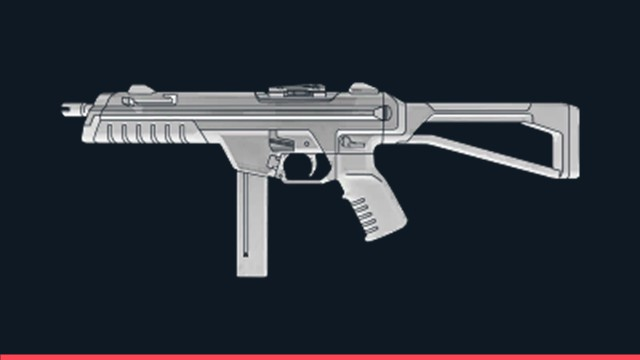
Custo: 1100 Créditos | Dano Cabeça: 67 | Corpo: 27 | Submetralhadora de altíssima cadência de tiro para curta distância.
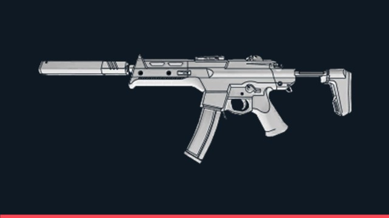
Custo: 1600 Créditos | Dano Cabeça: 78 | Corpo: 26 | Arma silenciada excelente para rounds bônus e meia compra.
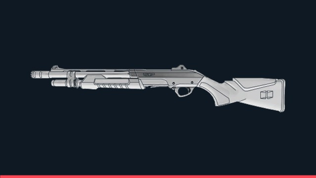
Custo: 850 Créditos | Dano Pelota: 34 (Cabeça) | Escopeta calibrada econômica para segurar entradas estreitas na defesa.
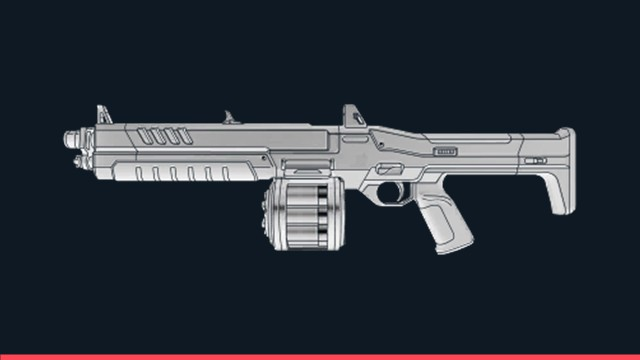
Custo: 1850 Créditos | Dano Pelota: 34 (Cabeça) | Escopeta automática devastadora para travar avanços em grupo.
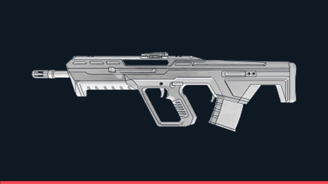
Custo: 2050 Créditos | Dano Cabeça: 115 | Corpo: 35 | Fuzil versátil com modo de rajada de 3 tiros ao mirar.
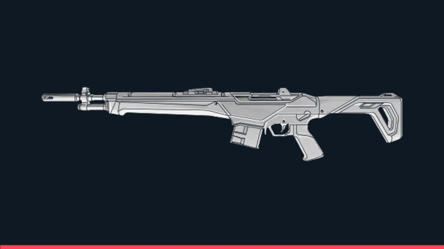
Custo: 2250 Créditos | Dano Cabeça: 195 | Corpo: 65 | Fuzil semiautomático de alta penetração em paredes e tiro certeiro.
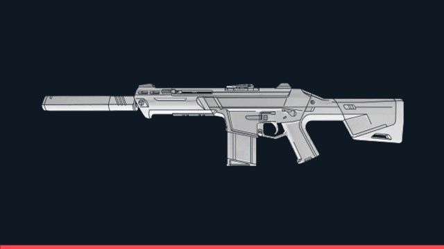
Custo: 2900 Créditos | Dano Cabeça: 156 | Corpo: 39 | Fuzil automático silenciado sem rastro de balas através de fumaças.
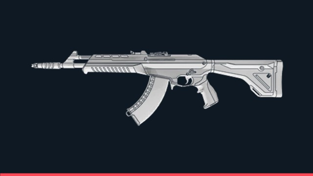
Custo: 2900 Créditos | Dano Cabeça: 160 | Corpo: 40 | Elimina qualquer oponente com um único tiro na cabeça em qualquer distância.
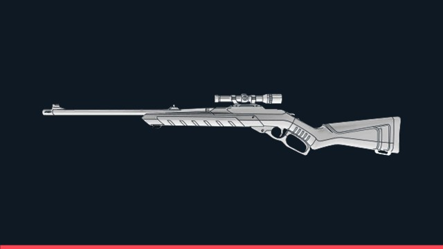
Custo: 950 Créditos | Dano Cabeça: 202 | Corpo: 101 | Rifle de ferrolho ágil que elimina alvos sem escudo com 1 tiro no peito.
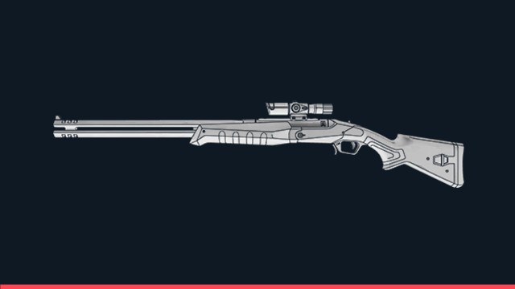
Custo: 2400 Créditos | Dano Cabeça: 238 | Corpo: 140 | Sniper de cano duplo feita para punir quem compra apenas Escudo Leve.
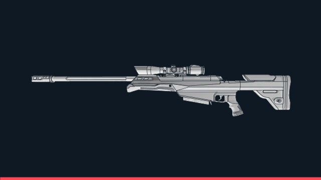
Custo: 4700 Créditos | Dano Cabeça: 255 | Corpo: 150 | Arma mais cara do jogo, capaz de travar corredores longos com um único disparo.
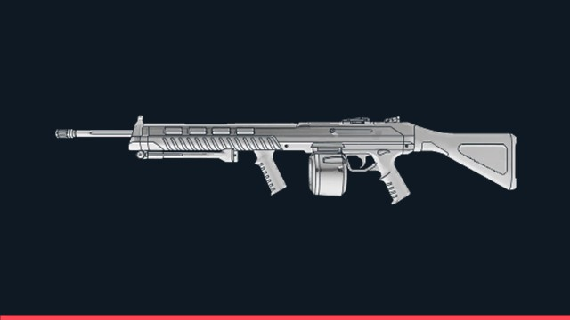
Custo: 1600 Créditos | Dano Cabeça: 75 | Corpo: 30 | Metralhadora de 50 balas excelente para varar paredes (wallbang).
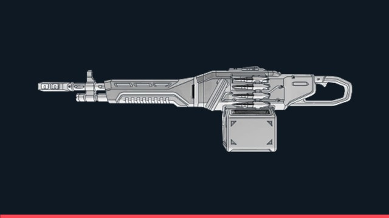
Custo: 3200 Créditos | Dano Cabeça: 95 | Corpo: 38 | Metralhadora pesada de 100 munições e alta penetração para segurar rushes.